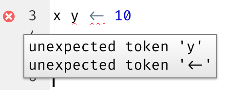
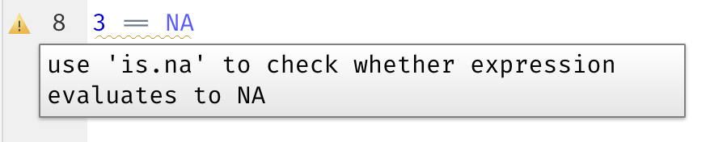
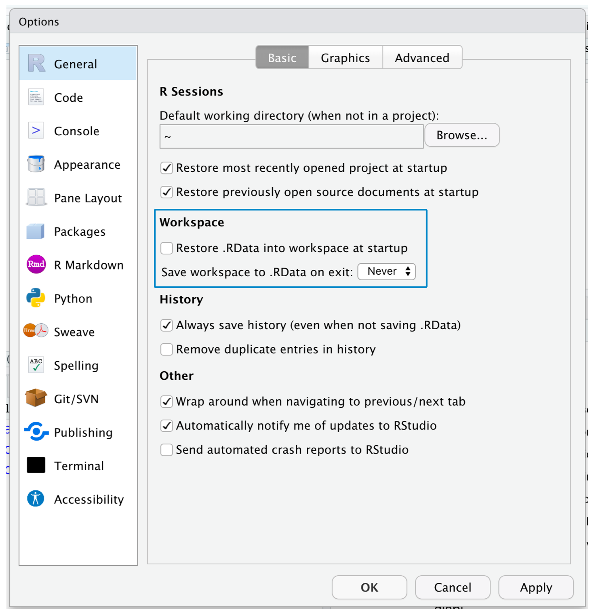
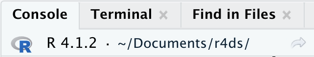

6 工作流程: 脚本和项目
本章将向你介绍组织代码的两个基本工具：脚本和项目。
6.1 脚本
到目前为止，你已经使用控制台来运行代码。这 是一个很好的起点，但是当你创建更复杂的ggplot2图形和更长的dplyr管道时，您会发现控制台空间很快就变得不够用了。为 了给自己更多的工作空间，请使用脚本编辑器。通 过点击“文件”菜单，选择“新建文件”，然后选择“R脚本”，或者使用键盘快捷键Cmd/Ctrl + Shift + N来打开它。你 会看到四个窗格，如 图 6.1 所示。脚 本编辑器是测试代码的好地方。当 你想要更改某些内容时，不再需要重新输入整个代码，只需编辑脚本并重新运行它。而 且，一旦编写好了符合你需求的代码，可以将其保存为脚本文件，以便以后轻松返回。
6.1.1 运行代码
脚本编辑器是构建复杂的ggplot2图形或长序列的dplyr操作的好地方。有 效使用脚本编辑器的关键是记住一个最重要的键盘快捷键：Cmd/Ctrl + Enter。这 个快捷键可以在控制台中执行当前的R表达式。例 如，请看下面的代码。
library(dplyr)
library(nycflights13)
not_cancelled <- flights |>
filter(!is.na(dep_delay)█, !is.na(arr_delay))
not_cancelled |>
group_by(year, month, day) |>
summarize(mean = mean(dep_delay))如果你的光标位于█处，按下Cmd/Ctrl + Enter将运行生成not_cancelled的完整命令。同 时，光标也会移动到下一个语句（以not_cancelled |>开头）。这 使得通过反复按下Cmd/Ctrl + Enter来逐步执行整个脚本变得很容易。
与其逐个表达式地运行代码，还可以使用Cmd/Ctrl + Shift + S一次性执行完整的脚本。定 期这样做是保证你捕获了脚本中代码所有重要部分的好方法。
我们建议你始终在脚本开头列出所需的包。这 样，如果与他人共享代码，他们可以轻松地看到他们需要安装哪些包。但 是，请注意，不要在共享的脚本中包含install.packages()。如 果不小心将一个会更改计算机的脚本交给他们是欠考虑的！
在学习后续章节时，我们强烈推荐从脚本编辑器开始并练习您的键盘快捷键。随 着时间的推移，以这种方式将代码发送到控制台会变得如此自然，甚至不用去考虑。
6.1.2 RStudio 诊断
在脚本编辑器中，RStudio会在侧边栏中用一条红色弯弯曲曲的线和一个叉来突出显示语法错误。

将鼠标悬停在十字上，看看问题是什么：

RStudio 还会让您了解潜在的问题：

6.1.3 文件保存和命名
RStudio 在你退出时会自动保存脚本编辑器的内容，并在重新打开时自动加载它。然 而，最好不要使用“Untitled1”，“Untitled2”，“Untitled3”等命名方式，而是应该保存您的脚本并给它们起一个有意义的名字。
可能你会想用code.R或myscript.R来命名文件，但在选择文件名之前应该多考虑一下。文 件命名的三个重要原则是：
- 文件名应该是机器可读的：避免空格、符号和特殊字符，不要依赖大小写来区分文件。
- 文件名应该是人类可读的：使用文件名来描述文件中的内容。
- 文件名应该与默认排序方式兼容：以数字开头命名文件，以便按字母顺序排序时，它们能按照使用的顺序排列。
例如，假设您在一个项目文件夹中有以下文件：
alternative model.R
code for exploratory analysis.r
finalreport.qmd
FinalReport.qmd
fig 1.png
Figure_02.png
model_first_try.R
run-first.r
temp.txt这里存在几个问题：很难确定先运行哪个文件；文件名包含空格；有两个名称相同但大小写不同的文件（finalreport 与 FinalReport1），并且一些名称没有描述其内容（run-first 和 temp）。
下面是一种更好的命名和组织同一组文件的方法:
01-load-data.R
02-exploratory-analysis.R
03-model-approach-1.R
04-model-approach-2.R
fig-01.png
fig-02.png
report-2022-03-20.qmd
report-2022-04-02.qmd
report-draft-notes.txt对关键脚本进行编号可以明确它们的运行顺序，而一致的命名方案可以更容易地看出发生了什么变化。此 外，图表的标签也类似；报告通过文件名中包含的日期进行区分，而temp被重命名为report-draft-notes以更好地描述其内容。如 果您在目录中有大量文件，建议进一步组织文件，将不同类型的文件（脚本、图表等）放在不同的目录中。
6.2 项目
有时，你可能需要退出R去做其他的事情，稍后再回到分析任务中；有时，你会同时处理多个任务，并且希望将它们分开。有 时，你需要将外部世界的数据带入R，并将R中的数值结果和图表发送回外部世界。
为了处理这些实际情况，你需要做出两个决定：
- 什么是真相的来源？你会保存什么作为发生的事情的永久记录？
- 你的分析在哪里进行？
6.2.1 什么是真相的来源？
作为初学者，依靠当前环境（Environment ）包含分析过程中创建的所有对象是无可厚非的。但 是，为了更容易地进行大型项目或与他人合作，R脚本应该成为事实真相的来源，你可以通过R脚本（和数据文件）重新创建环境。如 果只有自己的环境，则很难重新创建R脚本：你要么必须从记忆中重新键入大量代码（在此过程中不可避免地会犯错误），要么必须仔细挖掘您的R历史记录。
为了帮助保持R脚本作为你分析的真相来源，我们强烈建议你不要让RStudio在会话之间保留您的工作空间（workspace）。您 可以通过运行usethis::use_blank_slate()2或模仿 图 6.2 中所示的选项来实现。 这将会给您带来一些短期的痛苦，因为现在当您重新启动RStudio时，它将不再记住您上次运行的代码，您创建的对象或读取的数据集也将无法使用。 但是这种短期的痛苦可以避免长期的痛苦，因为它迫使你在代码中捕获所有重要的过程。 没有什么比在事实发生三个月后发现你只在环境中存储了重要计算的结果，而没有在代码中存储计算更糟糕的了。

有一组非常实用的键盘快捷键组合，它们将协同工作以确保你已经在编辑器中捕获了代码的重要部分：
- 按Cmd/Ctrl + Shift + 0/F10来重启R。
- 按Cmd/Ctrl + Shift + S来重新运行当前脚本。
我们每周都会使用这种模式数百次。
或者，如果不使用快捷键，你可以转到“会话”>“重启R”，然后选中并重新运行当前脚本。
RStudio server
如果您使用的是RStudio server，默认情况下R会话不会自动重启。当 你关闭RStudio server标签页时，可能会感觉正在关闭R，但实际上服务器会在后台保持其运行状态。下 次你返回时，你将处于和离开时完全相同的位置。这 使得定期重启R变得尤为重要，以便你是从一个干净状态开始的。
6.2.2 分析在哪里进行?
工作目录是R中非常重要的概念。R 在这个目录中查找你想要加载的文件，也将要保存的文件存放在这里。R Studio在控制台顶部显示当前的工作目录：

可以通过运行getwd()函数在R代码中输出当前的工作目录:
getwd()
#> [1] "/Users/hadley/Documents/r4ds"本次R会话中，当前工作目录（可以将其视为“主目录”）位于Hadley的Documents文件夹中一个名为r4ds的子文件夹中。当 您运行此代码时，它将返回不同的结果，因为你的计算机的目录结构与Hadley的不同！
作为R的初学者，让工作目录成为你的主目录、文档目录或者计算机上的任何其他奇怪的目录都是可以的。但 是，你已经阅读了本书中的多个章节，不再是初学者了。现 在，你应该开始将项目组织到目录中，并在处理项目时将R的工作目录设置为相关目录。
你可以在R内部设置工作目录，但不推荐这样做：
setwd("/path/to/my/CoolProject")有一种更好的方法，这种方法也能让您像专家一样管理R工作。那 就是使用RStudio项目。
6.2.3 RStudio项目
将所有与某个项目相关的文件（输入数据、R脚本、分析结果和图表）保存在一个目录中是一种明智且常见的做法，RStudio通过项目提供了内置支持。让 我们为您创建一个项目，以便您在使用本书的其余部分时可以使用它。点 击“文件”>“新建项目”，然后按照@fig-new-project 中显示的步骤操作。

将你的项目命名为r4ds，并仔细考虑将其放在哪个子目录中。如 果不将其存储在一个合理的地方，将来会很难找到它！
一旦完成此过程，你将获得一个专为此书创建的新RStudio项目。请 检查项目的“主目录”是否已设置为当前工作目录：
getwd()
#> [1] /Users/hadley/Documents/r4ds现在，在脚本编辑器中输入以下命令并将文件保存为“diamonds.R”。然 后，创建一个名为“data”的新文件夹。你 可以通过在RStudio的“文件”面板中点击“新建文件夹”按钮来完成此操作。最 后，运行完整的脚本，它将把PNG和CSV文件保存到您的项目目录中。不 用关注细节，你将在本书的后续中学习它们。
library(tidyverse)
ggplot(diamonds, aes(x = carat, y = price)) +
geom_hex()
ggsave("diamonds.png")
write_csv(diamonds, "data/diamonds.csv")退出RStudio。检 查与你的项目关联的文件夹——注意.Rproj文件。双 击该文件以重新打开项目。请 注意，你回到了离开时的位置：工作目录和命令历史与原来相同，你正在处理的所有文件仍然打开。但 是，由于遵循了上面的说明，你将拥有一个全新的环境，确保你是从一个干净的状态开始的。
根据操作系统的不同，选择你最喜欢的方式在计算机上搜索diamonds.png。你 会找到PNG文件（这并不奇怪），还会找到创建它的脚本文件diamonds.R。这 是一个巨大的胜利！有 一天，你可能会想要重新生成一个图形或只是了解它的来源。如 果你严格地使用R代码将图形保存到文件中而从不使用鼠标或剪贴板，那么你将能够轻松地重复以前的工作！
6.2.4 相对和绝对路径
一旦进入一个项目，你应该只使用相对路径而不是绝对路径。有 什么区别呢？相 对路径是相对于工作目录的，即项目的根目录。当 Hadley在上面写data/diamonds.csv时，它是/Users/hadley/Documents/r4ds/data/diamonds.csv的快捷方式。但 如果Mine在她的计算机上运行这段代码，它将指向/Users/Mine/Documents/r4ds/data/diamonds.csv。这 就是为什么相对路径很重要：无论R项目文件夹最终位于何处，它们都能正常工作。
绝对路径是指向同一个位置，与你的工作目录无关。根 据操作系统不同，它们看上去会有所不同。在 Windows上，它们以驱动器字母（例如，C:）或两个反斜杠（例如，\\servername）开头，而在Mac/Linux上，它们以斜杠“/”开头（例如，/users/hadley）。你 不应该在脚本中使用绝对路径，因为它们会妨碍共享：没有人会拥有与你完全相同的目录配置。
操作系统之间还有一个重要的区别：如何分隔路径的各个部分。M ac和Linux使用斜杠（例如，data/diamonds.csv），而Windows使用反斜杠（例如，data\diamonds.csv）。R 可以与这两种类型一起工作（无论你当前使用什么平台），但不幸的是，反斜杠在R中有特殊含义，要在路径中获得单个反斜杠，您需要键入两个反斜杠！这 会使生活变得令人沮丧，因此我们建议使用Linux/Mac风格的斜杠。
6.3 练习
登录RStudio Tips Twitter账户 https://twitter.com/rstudiotips，找到一个有趣的技巧，练习使用它！
RStudio诊断还会报告哪些常见错误？阅 读 https://support.posit.co/hc/en-us/articles/205753617-Code-Diagnostics 找到答案。
6.4 小结
在本章中，你学习了如何在脚本（文件）和项目（目录）中组织代码。就 像代码风格一样，这在一开始可能会感觉像是在做无用功。但 是，随着你在多个项目中积累更多的代码，你会开始认识到前期的一点组织工作可以为你节省大量的时间。
总的来说，脚本和项目为你提供了一个坚实的工作流程，这会在未来很好地为你服务：
- 为每个数据分析项目创建一个RStudio项目；
- 在项目中保存你的脚本（起一个带有信息的名字），编辑它们，分部分或整体运行它们；经常重新启动R以确保你已将所有内容捕获到脚本中。
- 永远只使用相对路径，而不是绝对路径。
然后，你需要的所有内容都存放于一个地方，并且与您正在处理的所有其他项目干净地分隔开。
到目前为止，我们一直在使用R包中包含的数据集。这 使得在预先准备的数据上进行一些实践变得更容易，但显然你的数据不会以这种方式提供。因 此，在下一章中将学习如何使用readr包将数据从磁盘加载到R会话中。
如果你在名字中使用“final”更是在冒险😆；漫画《Piled Higher and Deeper》中有一个关于此话题的有趣连载。↩︎
如果没有安装usethis，可以使用
install.packages("usethis")安装。↩︎